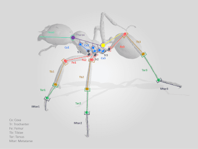
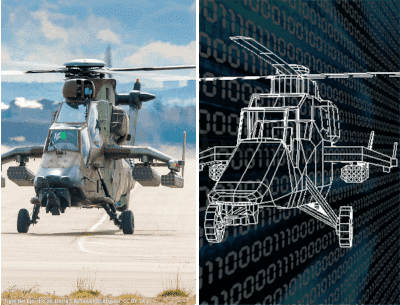

BioDesign : conception inspirée de la morphogenèse
Le projet BioDesign étudiera l'hypothèse que les mécanismes
biologiques de croissance des
endosquelettes peuvent être imités dans un contexte d'ingénierie pour automatiser la conception des
mécanismes. Afin de vérifier cette hypothèse, l'objectif de ce projet est de formuler de nouvelles
méthodologies de conception et d'implémenter des outils numériques inspirés des théories de la
croissance osseuse pour le développement d'applications en ingénierie. L'idée est de capitaliser les
possibilités de la fabrication additive pour obtenir des mécanismes à géométrie complexe déjà
assemblés.
Les données d'entrée de la méthodologie seront les chargements mécaniques externes au système
mécanique étudié ainsi que sa topologie. L'algorithme, imitant les processus de morphogenèse
biologique, façonnera les pièces élémentaires en fonction des contraintes mécaniques générées
notamment sur les surfaces de contact. Dans une formulation itérative, toutes les pièces seront
façonnées simultanément. Le résultat de la méthodologie sera la géométrie externe optimisée des
pièces élémentaires du système. Des algorithmes seront développés sous la forme d’un démonstrateur.
Des évaluations expérimentales et numériques seront effectuées.
Membres du projet
- Jean-Marc LINARES
- Santiago ARROYAVE-TOBON
- Kalenia MARQUEZ-FLOREZ
Barbarus : Exosquelettes bio-inspirés

Un exosquelette est, dans la plupart des cas aujourd’hui, une armure
motorisée alors que la nature met à notre disposition des modèles extraordinairement efficaces en
apparence. Ce projet a pour ambition de développer un exosquelette bio-inspiré fidèle à celui
observé chez Messor Barbarus, une fourmi qui transporte des charges.
L’efficacité de cette espèce
lui permet de porter et tracter respectivement 12 et 35 fois son poids. Pour le biologiste, cette
caractéristique explique la survie de l’espèce quand le rendement énergétique du transport de charge
lui est favorable mais reste à expliquer. Pour le mécanicien, cette espèce propose un modèle
musculo-squelettique sélectionné par l’évolution et extraordinairement efficace à la locomotion
chargée.
A partir de la cinématique de la patte et d’images obtenues par
tomodensitométrie, la
reconstruction fidèle de l’exosquelette sous OpenSim permettra, ici, d’estimer les actions
mécaniques internes et externes développées lors du transport de charges lourdes afin de valider
l’efficacité de l’exosquelette et d’orienter sa reproduction à des fins robotiques.
Ce projet est une collaboration entre le Centre de Biologie Intégrative de Toulouse et l’Institut de
Sciences du Mouvement.
Membres du projet
- Jean-Marc LINARES
- Santiago ARROYAVE-TOBON
- Pierre MORETTO
Digital twins d’ensembles d’helicopters

Un jumeau numérique est un modèle de produit réel qui utilise comme
valeurs d'entrée certaines
données extraites de ce produit afin de fournir des informations supplémentaires sur le comportement
de ce produit en fonctionnement. Les jumeaux numériques de systèmes dynamiques d'hélicoptères
peuvent être très utiles car l'instrumentation de toutes les pièces mécaniques en vol est très
difficile.
Les travaux proposés s’inscrivent dans le cadre de l’amélioration de l’utilisation des ensembles
mécaniques d’hélicoptères par l’utilisation couplée de modèle de simulation et de données
enregistrées en service.
L’objectif de ce projet est de mettre au point une méthodologie de création de jumeaux numériques
d’un ensemble mécanique d’hélicoptère ou chaque utilisation particulière est prise en compte pour
estimer l’endommagement réel de la pièce et les périodicités de surveillance les plus adaptées. La
zone d’application de cette recherche s’étendra des turbines jusqu’au rotor. Cette zone d’étude a
généré de nombreuses activités de recherche entre les partenaires industriel et universitaire, ces
dernières années.
Membres du projet
- Amandine REGIS
- Jean-Marc LINARES
- Santiago ARROYAVE-TOBON